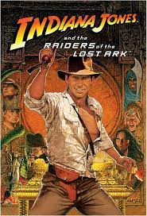
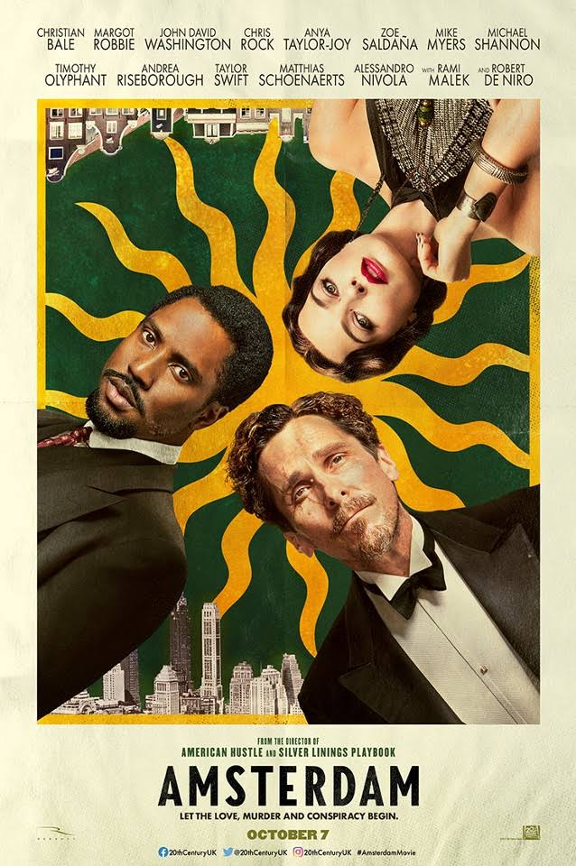

movie Gallery

Raiders of the Lost Ark
It stars Harrison Ford, Karen Allen, Paul Freeman, Ronald Lacey, John Rhys-Davies, and Denholm Elliott. Ford portrays Indiana Jones, a globe-trotting archaeologist vying with Nazi German forces in 1936 to recover the long-lost Ark of the Covenant, a relic said to make an army invincible.
Release date :
June 12, 1981
Directed : Steven Spielberg
Produced : Frank Marshall
Language : English
The Gray Man
Produced by the Russo brothers' company, AGBO, it is the first film in a franchise based upon Greaney's Gray Man novels. The plot centers on CIA agent "Sierra Six", who is on the run from sociopathic ex-CIA agent and mercenary Lloyd Hansen upon discovering corrupt secrets about his superior.
Release date : July 15, 2022
Directed : Anthony Russo
Produced :
Joe Russo,
Anthony Russo
Language : English

Amsterdam
David O. Russell's “Amsterdam,” initially billed as the story of three friends who found themselves “at the center of one of the most shocking secret plots in American history” presents itself as being based on a true story. But the film, in theaters now, adheres little to reality.
Release date :
October 7, 2022
Directed : David O. Russell
Produced :
Arnon Milchan,
Matthew Budman
Language : English
Home Alone
Home Alone is a 1990 American Christmas comedy film directed by Chris Columbus and written and produced by John Hughes. The first film in the Home Alone franchise, the film stars Macaulay Culkin, Joe Pesci, Daniel Stern, John Heard, and Catherine O'Hara. Culkin plays Kevin McCallister .
Release date :
November 10, 1990
Directed : Chris Columbus
Produced : John Hughes
Language : English